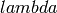
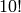

Programming in Python¶
In this section I will give all tools for programming with Python. The sections are ordered by programming paradigms. If you are new to programming, the last paragraph of this section contains an overview of the paradigms. ( Other ways to define functions )
Commenting in Python¶
To comment out lines of codes use #.
Examples:
# I'm a comment
x = x + 1 # do some stuff
# bla
# bla
Go with the control flow¶
The if statement¶
The if statement in Python is quite the way one would expect from other languages. As mentioned in the section Intendation for organising blocks of codes the if statement has the following structure:
if condition_is_true:
do_something
Note the intendention!
There is also an else statement in Python:
if condition_is_true:
do_something
else:
do_something_else
Note that for the else statement the intendention rule applies too!
There is also an elif clause short for else/if:
if condition_is_true:
do_something
elif another_condition_is_true:
do_something_different
else:
do_something_else
Here for example we determine the sign of a value:
if x > 0:
sign = 1
elif x < 0:
sign = -1
else:
sign = 0
while loops¶
while loops are also like expected:
while condition_is_true:
do_something
In Python while loops know alos an else statement. It is executed when the condition is violated:
while condition_is_true:
do_something
else:
do_something
Here an example:
k = 0
while k < 10:
print(k)
k += 1
else:
# if k >= 10 we come into the else clause
print("Start")
the output of this snippet is:
0
1
2
3
4
5
6
7
8
9
Start
for loops¶
For loops are a little bit different in Python, because in contrast to other programming languages for iterates through an iterator or an type which supports iterating, and not only to integers or numbers, like in C.
A for loop looks like this:
for x in list:
do_something_with_x
We can use the range function (see the section about Lists ) to create a norma; for loop:
for i in range(n):
do_something_with_x
The for loop knows also an else statement. It is executed when for reaches the end of the list/sequence.
Analogous to our while example:
for k in range(10):
print(k)
else:
# When end of list is reached...
print("Start")
Remark: To get out more performance of your Python code use xrange instead of range, because xrange doesn’t need allocate memory for a list. In Python 3, however, range returns an iterator and not a list, so this is obsolete then.
See also the Python wiki [1] on this topic.
The break and continue statements¶
The break and continue statements are borrowed from C.
continue continues with the next iteration of the loop. For example:
>>> k = 0 >>> for i in range(10): ... k += i ... continue # Go on with next iteration ... print(k) # The interpreter never reaches this line ... else: ... print(k) # print result ... 45
break breaks out of the smallest enclosing for or while loop. Here a famous example from the official Python tutorial [2]
>>> for n in range(2, 10): ... for x in range(2, n): ... if n % x == 0: ... print n, 'equals', x, '*', n/x ... break ... else: ... # loop fell through without finding a factor ... print n, 'is a prime number' ... 2 is a prime number 3 is a prime number 4 equals 2 * 2 5 is a prime number 6 equals 2 * 3 7 is a prime number 8 equals 2 * 4 9 equals 3 * 3
The pass statement¶
The pass statement, in fact, does nothing. It can be used as a placeholder for functions, or classe which have to be implemented yet.
For example the snippet
while 1:
pass
results in an endless loop, where nothing happens.
Defining functions¶
A function is declared with the def statement in normal Python manner. The statment has to be followed by an identifier We simply start with a classical example, and give explaination later on.
The factorial would be implemented in Python that way:
def my_factorial(n, pochhammer = None):
""" Your documentation comes here"""
if pochhammer is None: # Check if evaluate Pochhammer Symbol
a = n
k = 1
for i in xrange(n):
k *= a - i
return k # Give back the result
The return statement¶
The return statement terminate the function and returns the value. To return more values simply use a comma:
def f(x,y):
return 2*x, 3*y
Python return them as a tuple:
>>> a = f(2,3)
>>> a
(4, 9)
If you dont want to store them in a tuple simple use more identifiers seperated by a comma:
>>> b,c = f(2,3)
>>> b
4
>>> c
9
return without an expression returns None
Variables (inside functions)¶
Variables within a function are all local, except they are defined outside of the code block:
>>> x = 1 # declared outside of the function
>>> def f():
... a = 2 # declared inside of the function
... print(x) # can be called within the function
...
>>> f()
1
>>> a # not defined outside of the function
Traceback (most recent call last):
File "<stdin>", line 1, in <module>
NameError: name 'a' is not defined
But you can't assign values
to a global variable within a function
But you can’t assign a global varaible a new value within a function:
>>> x = 1
>>> def f():
... x = 2
... print(x)
...
>>> f()
2
>>> x
1
except you use the global statement:
>>> global Bad # Declare identifier as global
>>> Bad = 1
>>> def f():
... global Bad # Tell the function Bad is global
... Bad = 2
... print(Bad)
...
>>> Bad
1
>>> f()
2
>>> Bad
2
but I would avoid this as much as possible...
Default values and keyword arguments¶
Python allows to define functions with default values:
>>> def answering(name, mission, answer="I don't know"):
... print("What iss your name?")
... print(name)
... print("What iss your mission?")
... print(mission)
... if answer == "I don't know":
... print(answer + " Ahhhhhhhhhh!")
... else:
... print(answer)
... print("You may pass")
...
>>> answering("Gallahad", "The search for the holy grail")
What's your name?
Gallahad
What's your mission?
The search for the holy grail
I dont know Ahhhhhhhhhh!
>>> answering("Lancelot", "The search for the holy grail", "Blue")
What's your name?
Lancelot
What's your mission?
The search for the holy grail
Blue
You may pass
You can also call them with keyword arguments:
>>> answering("Lancelot", "The search for the holy grail", answer = "Blue")
What's your name?
Lancelot
What's your mission?
The search for the holy grail
Blue
You may pass
This can be quite useful. For example you want to define a function, with several options:
def f(x,y, offset_x = 0, offset_y = 0):
return 2*x + 2*y + offset_x - offset_y
Now we can call the offset_y variable directly, without setting a value for offset_x:
>>> f(0,0,1)
1
>>> f(0,0,offset_y = 1)
-1
Important: A non keyword argument cannot follow a keyword argument:
>>> f(offset_x = 1,0)
File "<stdin>", line 1
SyntaxError: non-keyword arg after keyword arg
This also applies for the definition of the function:
>>> def g(y = 1,x):
... return x + y
...
File "<stdin>", line 1
SyntaxError: non-default argument follows default argument
Calls with lists and dictionaries¶
A function be called with arbitrary many arguments using the * symbol:
>>> def sum_up(offset = 0, *summands):
... k = offset
... for x in summands:
... k += x
... return k
...
>>> sum_up(1)
1
>>> sum_up(1,2)
3
>>> sum_up(1,2,3)
6
>>> sum_up(1,2,3,4)
10
What happens here? Python wraps all additional arguments into a tuple, which is identified with the keywords after the *. Very often as convention *args is used.
One also can use different types of keywords, and surpass them as dictionary. Here again an example from the Python documentation:
def cheeseshop(kind, *arguments, **keywords):
print "-- Do you have any", kind, "?"
print "-- I'm sorry, we're all out of", kind
for arg in arguments:
print arg
print "-" * 40
keys = sorted(keywords.keys())
for kw in keys:
print kw, ":", keywords[kw]
It could be called like this:
cheeseshop("Limburger", "It's very runny, sir.",
"It's really very, VERY runny, sir.",
shopkeeper='Michael Palin',
client="John Cleese",
sketch="Cheese Shop Sketch")
and of course it would print:
-- Do you have any Limburger ?
-- I'm sorry, we're all out of Limburger
It's very runny, sir.
It's really very, VERY runny, sir.
----------------------------------------
client : John Cleese
shopkeeper : Michael Palin
sketch : Cheese Shop Sketch
Be aware that **name has to come after *name (if there is one).
Remark The * operator can be used to unpack contents of a list and give them to a function as well:
>>> def f(x,y):
... return x+y
...
>>> liste = [1,2]
>>> f(*liste)
3
Docstrings¶
Docstrings are optional, and come right after the definition of the function. A docstring is simply a string. Here is an example:
>>> def doubling(x):
... """I'm doubling stuff!
... Yes it's true!"""
... return 2*x
...
>>> print doubling.__doc__
I'm doubling stuff!
Yes it's true!
There are many powerful tools like Sphinx, where you can use your docstrings for creating documentation of your code, or tools for automatic testing, which read take the docstring as input.
Other ways to define functions¶
There are also some other ways to define functions in Python. One would to be write them in one line, and seperate the different operations with a semicolon:
>>> def f(x): y = 2*x; return y
...
>>> f(2)
4
Another way is the  statement:
statement:
f = lambda x: 2*x
One key difference is, that  has no return statement, and it can contain only one expression.
In fact lambda returns a function, and is only syntactic sugar, but it often is very handy.
But lambda can take more than one variable:
lambda x,y: x + y
Note: In older versions of Python 2 lambda can unpack tuples:
lambda (x,y): x + y
is valid in older versions of Python 2, but not in Python 2.6! In Python 2.6 or above one has to write
lambda xy_tuple: xy_tuple[0] + xy_tuple[1]
or
lambda x,y: x + y
instead.
The statement is confusing many people.
Guido Van Rossum himself wanted to remove the
statement from Python 3, but didn’t succeed to find a good replacement
[3] . As one of it’s biggest fans I can only say: Hooray for
!
The reason for the strange naming is that in the early times of
Python, many Lisp programmers wanted some functional features
from Lisp, and one of the was .
But it’s true origin comes from the calculus [4] .
I prefer lambda for some reasons, especially that I can use it inline.
But I wouldn’t recommend to use every time, sometimes the
use of the lambda statement is not good readable.
One may argue that using too often creates unreadable code.
But on the other hand, it has the benefit, that the actual action is
written right there where it is excecuted, and that can be used to
avoid unnecessary comments, especially if you defined the action
several lines before.
In my work I often have to deal with several mathematical operations. And yes, I prefer it to write:
lambda x,y,z: x**2*y**3 + z**4
over
def square_x_mlt_y_to_pwr_3_add_z_to_pwr_4(x,y,z):
return x**2*y**3 + z**4
Of course one can also use shorter names like help_func1, or help_func2 .. and forget which one does what... but you also can overwrite it again, and again.... and break something in an other part of your code.
Just my 2 cents.
Functional Programming tools in Python (or hooray for )¶
In some sense I’m relaively new to functional programming myself, in somse sense not, since I use it hidden in some mathemtaical languages like Mathematica or Matlab.
Functional programming can be a very powerful tool, and I show here some of the key features for functional programming in Python. I follow here the programming guide for functional programming in Python [5]. For more advanced techniques and more founded Background on that topic I refer to the Python Functional Programming HOWTO [6]
The map function¶
The map function takes any number on iterables and a function, and apply the function on the iterables. That means:
map(f, iter1, iter2,...)
returns
[f(iter1[0],iter2[0],..), f(iter1[1],iter2[1],...)...]
For example:
>>> liste = range(3)
>>> def f(x): return 2*x
...
>>> map(f,liste)
[0, 2, 4]
>>> def g(x,y): return x*y
...
>>> map(g,liste,liste)
[0, 1, 4]
This can be very useful for vectorized operations. Here again the lambda statement comes in handy:
map(lambda x: 2*x, liste)
returns again
[0, 2, 4]
The reduce function¶
Reuce takes as input a list, a function and as optional value an initial value. Reduce do now the following: It takes the first elements of the list, and apply the function to it, than it applies the function to the result and the next element in the list, and again and again... and returns an value. If an initial value is given this is taken as the first value. This menas now in expressions that
reduce(f, liste)
is evaluated as
..f(f(f(liste[0],liste[1]),liste[2]),liste[3])..
or
- ::
- reduce (f,liste,init)
to
..f(f(f(init,liste[0]).liste[1]),liste[2])..
Let’s calculate the factorial 
reduce(lambda x,y: x,y, range(1,10))
or the doubled factorial:
reduce(lambda x,y: x,y, range(1,10),2)
Note In Python 3 reduce was moved to the functools module. It can be backimported via:
from functools import reduce
The filter function¶
An important tool to select elements from a list is the filter function. filter takes a function and a list and returns, the list of elements for which the function returned true:
def Is_even(x):
return (x % 2) == 0
filter(Is_even,range(10))
returns now:
[0, 2, 4, 6, 8]
Generators¶
Generators are like functions, but they give back a sequence of data instead of a single output. They can be used to write iterators.
To create an generator, simply write a function with the def statement, but instead of using return use yield.
For example
def generate_even(N):
for n in range(N):
yield 2*n
gives back an iterator witch contains all even numbers.
If we now create an iterator we can do all things which we know:
>>> iterator = generate_even(5)
>>> list(iterator)
[0, 2, 4, 6, 8]
One key difference between generators and functions is, that while in a function call, all local variables are created once and are destroyed after return was called. The varaibles in an generator stay. You can call return within an generator as well, but without output, and after it is called the generator cannot produce further output.
As an example we write a little program which factors an integer number with help of functional tools:
from __future__ import print_function
def find_factors(num):
"""
Find prime factors of a number iterativly
"""
# we take advantage of the fact that (i +1)**2 = i**2 + 2*i +1
i, sqi = 1, 1
while sqi <= num+1:
sqi += 2*i + 1
i += 1
k = 0
while not num % i:
num /= i
k += 1
yield i,k
def print_factors(num_fac):
if num_fac[1] > 1:
print(str(num_fac[0]) + "**" + str(num_fac[1]),end = " ")
else:
print(num_fac[0],end=" ")
def factorise(num):
"""
Find prime factors and print them
"""
factor_list = list(find_factors(num))
def get_power(pair): return pair[1]
factor_list = filter(get_power, factor_list)
if len(factor_list) is 1 and (factor_list[0])[0] is 1:
print("PRIME")
else:
print(num, end=" ")
map(print_factors, factor_list)
print("")
List Comprehensions¶
List comprehensions are often a good alternative to map, filter and lambda. A list comprehension consists of an expression followed by an for clause, which are followed by zero or more for and/or if clauses. The whole thing is surrounded by rectangular brackets.
Examples:
>>> vector = range(0,10,2)
>>> [3*x for x in vector]
[0, 6, 12, 18, 24]
>>> [2*x for x in vector if x > 3]
[8, 12, 16]
>>> vector1 = range(3)
>>> vector2 = range(0,6,2)
>>> [x*y for x in vector1 for y in vector2] # Goes through all combinations
[0, 0, 0, 0, 2, 4, 0, 4, 8]
>>> [vector1[i]*vector2[i] for i in range(len(vector1))] # mimic map
[0, 2, 8]
>>> map(lambda x,y: x*y,vector1,vector2) #equivalent statement
[0, 2, 8]
List comprehensions can also be applied to much more complex expressions, and nested functions.
Objects and classes¶
Classes are the basis of every OO language, and Python is no exception.
Definition of classes and basic properties¶
Classes look quite similar to functions:
class class_name:
<statement1>
<statement2>
.
.
.
We use here complex numbers as an example:
class my_complex:
""" Complex numbers as example"""
nr_instances = 0 # This belongs to the whole class
def __init__(self,re,im):
"""The init method serves as constructor"""
self.re = re
self.im = im
my_complex.nr_instances += 1
def abs(self):
"""Calculates the absolute value"""
return self.re**2 + self.im**2
What do we have here. First let’s look into the __init__ method, which is the constructor of an object. The first element is the object itself. Every function (method) of the class takes itself as first input parameter. The name self is only a convention, one can use every other identifier. Important: self has to be the first argument in every class method, even when it is not needed!
So what does our constructor here:
First the object gets it real and imaginary part, simply by setting this class member. In Python the object can be created simply by:
>>> a = my_complex(2,3)
As seen in the constructor we simply added a new class member to the object, and in fact, one can always add new class members as he/she wishes:
>>> a.new = 1 >>> a.new 1
The last statement simply adds one to the counter, which counts the number of instances. We defined it in the beginning of the class before the __init__ function. This counter belongs to the whole class, that’s the reason why we had to call it with my_complex.nr_instances. And indeed the counter is global for our class:
>>> a.nr_instances 1 >>> b = my_complex(3,4) >>> a.nr_instances 2 >>> b.nr_instances 2
The next thing we defined is a class method, in this case the (squared) absolute value. After creating an instance, we can call it simply like that:
>>> a.abs()
13
Huh what happened to the self? The answer is Python takes the self argument as default, so you don’t have to type it anymore.
Deriving classes from other classes and overloading of methods¶
This is rather easy in Python. To tell the interpreter from which class he should derive the new class, simple put it into round brackets. To to overload a certain function simply add it again.
Let’s go back to our complex number example. It annoys us, that the absolute value is squared, but we don’t want a new constructor. So we simply derive The old complex class, and overload the absolute value:
class my_new_complex(my_complex):
def abs(self):
"""Calculates the absolute value"""
return (self.re**2 + self.im**2)**0.5
What does Python internally? After it checked which functions are already defined in the new class it adds all members from the old. With that logic one also can inherit from multiple base classes. After checking what’s in the new class, it looks what is in the first class given, then in the second, and so on. Consider the for example in the class
new_class(base1,base2,base3)
pass
the priority order for looking up new methods is new_class-> base1 -> base2 -> base3 and not new_class -> base3 -> base2 -> base1.
Operator overloading¶
In my opinion one of the most powerful features in OO languages, and the reason why I think Java isn’t worth to look at it.
Especially in mathematics one wants to define new algebras or objects with algebraic operations, to make programs more readable and algorithms reusable.
In order to overload operators in Python classes one has only to add the right methods. Now let’s add +, * operations to our complex number class:
class my_nice_complex(my_new_complex):
def __add__(self,other):
return my_nice_complex(self.re + other.re,self.im + other.im)
def __mul__(self,other):
return my_nice_complex(self.re*other.re - self.im*other.im,
self.re*other.im + self.im*other.re)
The __add__ and __mul__ functions return new objects of the complex class. The good thing is we can use the normal + and * operators:
>>> a = my_nice_complex(3,4)
>>> b = my_nice_complex(5,7)
>>> c = a + b
>>> c.re
8
>>> c.im
11
One can also add additional features like a string representation, that print is able to return. Lets add a __repr__ method to the class:
class my_nice_complex(my_new_complex):
def __add__(self,other):
return my_nice_complex(self.re + other.re,self.im + other.im)
def __mul__(self,other):
return my_nice_complex(self.re*other.re - self.im*other.im,
self.re*other.im + self.im*other.re)
def __repr__(self):
return "{0} + {1}i".format(self.re,self.im)
Now we can print our complex class:
>>> a = my_nice_complex(3,4)
>>> print(a)
3 + 4i
There is a whole bunch of features that can be added to a class. I refer here to the Python reference manual for a complete list [7], because listing them all here would be too long.
Exceptions¶
What is an exception? An exception is a special object (yes exceptions are objects too!) which to tell the interpreter that something happended, which shouldn’t have (or sometimes it is expected), then the interpreter tells you that it caught an exception. Of course it is possible to tell the interpreter what to do when an exception arises. This allows many advanced possibilites for the programmer.
Python has many builtin exceptions like out of range exceptions division by zero exceptions and so on.
Exceptions are a powerful tool in programming languages to find errors, and provide a safe workflow. Exceptions can also be used for control flow. In fact handling exceptions can yield better performance, than many if statements, because the interpreter checks many if s but only has to wait for one exception.
Handling exceptions¶
To catch exceptions us the try and except statements:
try:
1/0
except ZeroDivisionError:
print("I don`t think so, Tim.")
What happens here? The try statement excecutes the following codeblock. If an exception of the type ZeroDivisionError arises it executes the code block after the except statement. Of course one can handle sever different exception types. Only add more except statments:
try:
do_something
except exception_type1:
do_that
except exception_type2, and_exception_type3:
do_this
.
.
.
With help of the raise can also force the program to throw exceptions. For example
>>> raise Exception('spam','eggs')
Traceback (most recent call last):
File "<stdin>", line 1, in <module>
Exception: ('spam', 'eggs')
This is important to throw the correct exceptions of certain types, with user defined error messages. This makes debugging a lot easier!
There is another possibility in Python: So called clean up actions, which have to executed at all costs (for example cleaning up allocated memory). Those can be specified via the finally statement:
>>> try:
... raise KeyboardInterrupt
... finally:
... print("I don`t think so, Tim.")
...
I don`t think so, Tim.
KeyboardInterrupt
Here a more advanced example for exception handling: Let’s remember our prime factor example from the Generators section. We want that the function should only handle integers, so we check this with help of exceptions:
from __future__ import print_function
def find_factors(num):
"""
Find prime factors of a number iterativly
"""
# we take advantage of the fact that (i +1)**2 = i**2 + 2*i +1
i, sqi = 1, 1
while sqi <= num+1:
sqi += 2*i + 1
i += 1
k = 0
while not num % i:
num /= i
k += 1
yield i,k
def print_factors(num_fac):
if num_fac[1] > 1:
print(str(num_fac[0]) + "**" + str(num_fac[1]),end = " ")
else:
print(num_fac[0],end=" ")
def factorise(value):
"""
Find prime factors and print them
"""
try: #check if num is an integer
num = int(value) #with exceptions
if num != float(value):
raise ValueError
except (ValueError, TypeError):
raise ValueError("Can only factorise an integer")
factor_list = list(find_factors(num))
def get_power(pair): return pair[1]
factor_list = filter(get_power, factor_list)
if len(factor_list) is 1 and (factor_list[0])[0] is 1:
print("PRIME")
else:
print(num, end=" ")
map(print_factors, factor_list)
print("")
Compare this to the last programming example of this page [8] , which is an imperative solution.
For further information on Exceptions see the Python documentation [9]
Creating new exceptions¶
Since Exceptions are classes too, they can be simply created by deriving them from the Exception base class:
class ToolTimeException(Exception):
def __init__(self, stupid_comment):
self.stupid_comment
def __str__(self):
print("\n" + self.stupid_comment + "\nI don't think so, Tim")
Then you can normally raise it:
>>> raise ToolTimeException("And if you're painting Al's mom, you can \
... get it done in a matter of years." )
Traceback (most recent call last):
File "<stdin>", line 2, in <module>
__main__.ToolTimeException
And if you're painting Al's mom, you can get it done in a matter of years.
I don't think so, Tim
Modules and Packages¶
Of course no one wants to type everything into the interpreter all the time, but safe the programs into files and execute them by calling a function. We learn how to do this in Python.
Modules¶
We alredy dealt indirectly with modules. Modules are several functions, classes etc. stored in a file with a .py suffix, like we did in the Goodbye World example.
For example lets write a a file with some functions in it:
def square(x):
return x**2
def cube(x):
return x**3
Now save them in a file. Let’s say powers.py.
Now you can import it into Python with the import statement:
import powers
From that on, you can call at’s functions:
>>> powers.square(3)
9
We called the square function like a class member, and in fact a module is a class.
If one don’t want to import a part of a module directly, one can use the from...import statement:
from powers import cube
Now cube can be called directly:
>>> cube(3)
27
This is also a great benefit over Matlab: You can do as many functions as you want into one file.
Packages¶
To construct trees of modules we can organise them in packages. To make a package do the following: Save all modules that should belong to the package into a directory with the name of the package. Then add an (most times empty) file named __init__.py to the folder. For example we want our power module into an math_stuff package which also holds an module for roots of several powers. First we make a directory math_stuff
So we write that module:
def sqrt(x):
return x**0.5
def curt(x):
return x**(1./3.)
and save it to a file roots.py in the math_stuff directory. Then we create an empty file __init__.py in that folder.
Important make sure to be in the right working directory! There are several possiblities to do that:
cd to your directory in a shell and call Python there. Then the current directory is also your working directory.
In Python, you can achieve that by using the chdir function from the os module:
>>> from os import chdir >>> chdir("/the/folder/math_stuff_is_in/")
In IPython or Sage simply use the command cd in the interpreter.
Now you can normally import the powers module by:
>>> import math_stuff.powers
and call it’s functions:
>>> math_stuff.powers.square(4)
16
To build subpackages one only has to create a subfolder with the name of the subpackage and put an __init__.py file into a that subfolder, and so on.
There are several more things one can do, for example make it possible to import the complete namespace with *:
>>> from os import *
Now you can use every function and submodule of the os package, without typing os.whatever. I personally don’t recommand that because of two reasons:
- If you load to much modules, which have quite similar functions (for example every math packages has it’s sin function, then you can run into troubles.
- It yields better performance. The more functions and modules are loaded the more load has the interpreter to deal with.
I recommend personally to import explicitly with from ... import only the functions you actually need.
For further information see the Python documention [10].
Some words on programming paradigms¶
There are several programming paradigms, and the most common in modern programming languages are
- Imperative programming
- Functional programming
- Object oriented programming
Look at for exmaple at Wikipedia for an short overwiev on that topic [11], or a good programming book of your choice, If you want to go deeper into that topic.
In short:
In imperative programming you define sequences of commands the computer should perform, with help of loops, control statements, and functions. The program has states which determine, what the program does, and which action to perform. This is a quite natural approach to programming, because a human works also that way, for example: state “hunger” -> get food). Classical examples for such languages are Fortran (the first high level language) or C.
- Functional programming is a little bit more artifical,
but often a more elegant approach for programming. In functional programming you define functions and let them operate on objects, lists, or call them recursivly. An example would be the Lisp family, which was also the first one. (It’s worthwile to look at Lisp not only to customize your Emacs. A good reading tip would be: Practical Common Lisp [12] ) One important benefit of functional programming is, that is easier to parallize. For example it’s easier for the compiler/interpreter to decide, when you operate with a function on a list, because all operations are independent anyway, than within a for loop where the compiler/interpreter doesn’t know if there are operations which could be possible connected. Other benefits are listed in the Python Functional Programming Howto.
- Object oriented programming is (dear computer scientists, don’t
send me hatemail) more a way to organize your data, and program than a real paradigm, and in fact you can program OO even in C with the help of structs. I already wrote a little about that (see Object oriented programming abstracts away your problems ), and at least for everyone who does abstraction in a regular basis this is a very intuitive concept. (And in fact every human does! ) OO programming means to collect things, that share specific attributes in certain classes. And every Object that shares those features belongs to that class. A real world example would be wheels: There are big wheels, small wheels, wheels for snow etc. but they all share common properties that makes them wheels (For example they are all round, and break in a regular basis).
The good news are, that in Python you are able to work with all three at least to some extend. (Python is more imperativ than funcional). That means Python is a multi paradigm language.
Even if some say that one of the three is the true answer, I personally think that all three have their benefits and drawbacks, and thats the reason I prefer multiparadigm languages like Python, because sometimes it is easier and more intuitive to program a functionality in one certain way, while it’s not so easy in the others.
For example I think it’s easier and more elegant to write
def f(x): return 2*x
x = range(10)
x = map(f,x)
than
def f(x): return 2*x
x = range(10)
for i in x:
x[i] = f(x[i])
but it’s more intuitive and easier to write
def f(x): return 2*x
x = range(10)
for i in range(0,10,2):
x[i] = f(x[i)])
than
def f(x): return 2*x
x = range(10)
map(lambda i: f(x[i]), range(0,10,2))
Links
| [1] | http://wiki.python.org/moin/PythonSpeed/PerformanceTips |
| [2] | http://docs.python.org/tutorial/controlflow.html |
| [3] | http://mail.python.org/pipermail/python-dev/2006-February/060415.html |
| [4] | http://en.wikipedia.org/wiki/Lambda_calculus |
| [5] | http://programming-guides.com/python/functional-programming |
| [6] | http://docs.python.org/howto/functional.html |
| [7] | http://docs.python.org/reference/datamodel.html#special-method-names |
| [8] | http://pleac.sourceforge.net/pleac_python/numbers.html |
| [9] | http://docs.python.org/tutorial/errors.html |
| [10] | http://docs.python.org/tutorial/modules.html |
| [11] | http://en.wikipedia.org/wiki/Programming_paradigm |
| [12] | http://www.gigamonkeys.com/book/ |